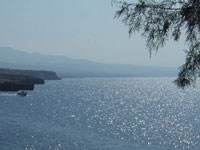

Виды моря
Я научился плавать с маской на Чёрном море. В те годы у меня был фотоапарат "Зоркий 4" с чёрно-белой плёнкой, но ничего интересного не сохранилось.
Подводные фото в основном сделаны в Красном море в Шарм-эль-Шейхе. Немного в Средиземном море - на Крите и Родосе. Ещё я был в Анталии. Вот и все моря.

Средиземное море
у берега Крита


Нет дождей и рек.
Вода прозрачная.